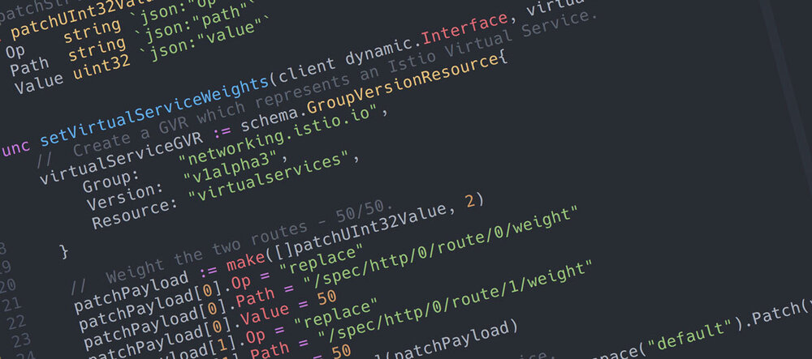
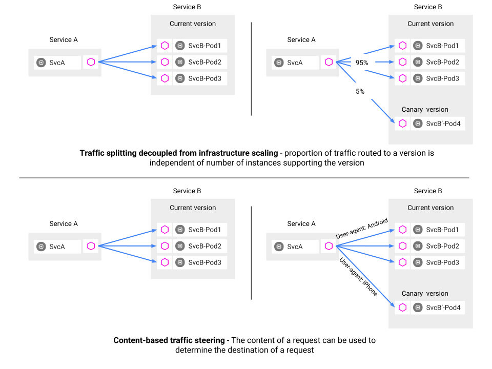

本文为翻译文章，点击查看原文。
在本文中，我将演示如何使用Golang来操作Kubernetes Custom Resources，以Istio为例。 不需要您了解Istio，我只是用它来展示概念！

Istio是一个非常受欢迎的服务网格平台，它允许工程师快速地为基于服务的应用程序添加遥测技术、先进的流量管理等功能。
Istio工作原理的一个有趣的地方是，当部署到Kubernetes集群中时，许多关键配置对象被作为自定义资源处理。自定义资源是一个非常强大的Kubernetes特性，它允许您创建自己的”一等“资源（就像pod、副本、部署等），然后使用kubectl或Kubernetes API与它们进行交互。
在本文中，我将展示如何使用Golang Kubernetes client与这些自定义资源交互。
CRD：快速概述
在为集群设置Istio时，您可能要做的一件常见的事情是指定如何路由通信。这可能相当复杂，如下所示:

对于这样的系统，有一种配置方法就是使用一个ConfigMap，其中包含如何路由服务的定义。
然而，Istio实际上注册了新的资源类型（自定义资源定义），来表示网关或服务之类的对象。我们可以创建/更新/删除/操作这些资源类型，就像任何其他Kubernetes对象一样。
例如，我可以为上面的示例创建一个虚拟服务，如下所示:
cat << EOF | kubectl create -f -
apiVersion: networking.istio.io/v1alpha3
kind: VirtualService
metadata:
name: service2
spec:
hosts:
- "*"
gateways:
- demo1-gateway
http:
- route:
- destination:
host: service2
subset: v1
weight: 95
- destination:
host: service2
subset: v2
weight: 5
EOF
同样，重要的不是这个资源的具体内容，而是我可以像对待其他Kubernetes对象一样对待Istio资源:
$ kubectl get virtualservices.networking.istio.io
NAME AGE
service2 93s
或者：
$ kubectl delete virtualservices.networking.istio.io/service2
甚至还可以使用edit、describe、注册生命周期事件、监视更改等等操作。
使用go语言操作CRD
使用Golang Kubernetes Client可以创建强定义的类型，然后就可以使用这些类型与CRD交互。红帽博客文章Kubernetes Deep Dive: Code Generation for Custom Resources就是一个例子。
这是一种非常好的方法，但是如果您想快速访问一些数据，而又不想生成大量代码，那么这种方法会让您感到非常吃力。
还有一种替代方法，即使用DynamicClient。首选的方法似乎是第一种方法，它涉及到代码生成，因此第二种方法的文档很少。然而，第二种方法其实很简单。
下面这个例子介绍如何列出所有Istio VirtualService资源，而无需生成任何代码:
import (
metav1 "k8s.io/apimachinery/pkg/apis/meta/v1"
"k8s.io/client-go/dynamic"
)
// Create a Dynamic Client to interface with CRDs.
dynamicClient, _ := dynamic.NewForConfig(config)
// Create a GVR which represents an Istio Virtual Service.
virtualServiceGVR := schema.GroupVersionResource{
Group: "networking.istio.io",
Version: "v1alpha3",
Resource: "virtualservices",
}
// List all of the Virtual Services.
virtualServices, _ := dynamicClient.Resource(virtualServiceGVR).Namespace("default").List(metav1.ListOptions{})
for _, virtualService := range virtualServices.Items {
fmt.Printf("VirtualService: %s\n", virtualService.GetName())
}
为了清晰起见，这段代码省略了设置和错误处理，完整的示例在k8s-list-virtualservices.go。
使用go语言修改CRD
您可能已经注意到，代码.Resource().Namespace().List()与Kubernetes Clientset进行API调用时使用的结构非常相似。实际上，本质上是一样的。看看接口，你可以看到所有你想要的操作:
CreateUpdateDeleteGet
等等。这很好，因为您可以像我的文章’Patching Kubernetes Resources in Golang‘中那样使用相同的技巧来操作这些实体，而无需创建表示它们的结构。
下面是另一个简短的例子，这次展示了如何将服务的路由的权重调整到50%/50%:
import (
metav1 "k8s.io/apimachinery/pkg/apis/meta/v1"
"k8s.io/client-go/dynamic"
)
// Create a GVR which represents an Istio Virtual Service.
virtualServiceGVR := schema.GroupVersionResource{
Group: "networking.istio.io",
Version: "v1alpha3",
Resource: "virtualservices",
}
// Weight the two routes - 50/50.
patchPayload := make([]PatchUInt32Value, 2)
patchPayload[0].Op = "replace"
patchPayload[0].Path = "/spec/http/0/route/0/weight"
patchPayload[0].Value = 50
patchPayload[1].Op = "replace"
patchPayload[1].Path = "/spec/http/0/route/1/weight"
patchPayload[1].Value = 50
patchBytes, _ := json.Marshal(patchPayload)
// Apply the patch to the 'service2' service.
_, err := dynamicClient.Resource(virtualServiceGVR).Namespace("default").Patch("service2", types.JSONPatchType, patchBytes)
请参阅 k8s-patch-virtualservice.go中的完整示例。
运行示例后，您可以使用Kubernetes CLI来验证更改:
$ kubectl get virtualservices.networking.istio.io/service2 -o yaml
apiVersion: networking.istio.io/v1alpha3
kind: VirtualService
metadata:
clusterName: ""
creationTimestamp: 2018-10-08T09:53:16Z
generation: 0
name: service2
namespace: default
resourceVersion: "487435"
selfLink: /apis/networking.istio.io/v1alpha3/namespaces/default/virtualservices/service2
uid: fac5930c-cadf-11e8-90a2-42010a94005b
spec:
gateways:
- demo1-gateway
hosts:
- '*'
http:
- route:
- destination:
host: service2
subset: v1
weight: 50
- destination:
host: service2
subset: v2
weight: 50
保持简单！
就是这样！这个技巧使我正在做的事情变得简单了很多，但是需要做一些实验才能得到正确的结果。我希望你觉得这个方法有用，请在评论中分享你的想法与问题。
进一步阅读
在采用这种方法时使用了以下几篇文章: